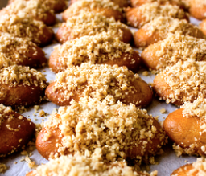

Voltar
Melomakarono

Ingredientes:
para os biscoitos:
- 250g de farinha de trigo
- 100g de semolina
- 1 colher de chá de fermento em pó
- 1/2 colher de chá de bicarbonato de sódio
- 1/2 colher de chá de canela em pó
- 1/4 colher de chá de cravo em pó
- 100ml de azeite de oliva
- 50ml de suco de laranja
- 50ml de brandy ou conhaque
para a calda:
- 200g de mel
- 200ml de água
- 150g de açúcar
- Casca de 1 laranja
- 1 pau de canela
Instruções:
- Pré-aqueça o forno a 180°C.
- Em uma tigela grande, misture a farinha, semolina, fermento, bicarbonato de sódio, canela e cravo.
- Em outra tigela, misture o azeite de oliva, suco de laranja e brandy.
- Combine os ingredientes líquidos com os secos e amasse até formar uma massa homogênea.
- Pegue pequenas porções da massa e molde-as em forma oval ou redonda.
- Coloque os biscoitos em uma assadeira forrada com papel manteiga e asse no forno por cerca de 20-25 minutos, ou até que fiquem dourados.
- Enquanto os biscoitos estão no forno, prepare a calda. Em uma panela, misture o mel, água, açúcar, casca de laranja e o pau de canela. Deixe ferver por 5-7 minutos, mexendo ocasionalmente.
- Retire a casca de laranja e o pau de canela da calda.
- Assim que os biscoitos estiverem prontos e ainda quentes, mergulhe-os na calda por alguns segundos. Certifique-se de cobri-los completamente.
- Retire os biscoitos da calda e coloque-os em uma travessa para esfriar.